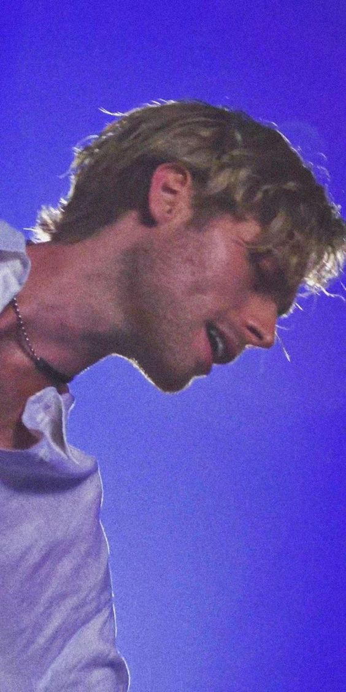

Luke Hemmings is my fav glitter boy, my fav singer. Here are lyrics from
some of my favorite songs by him. Comedown It's been a hell of a week
Have I left this bedroom yet? I'll sleep this life away 'Til I see a
reflection I can speak to With a cold breeze Maybe I can soon forget
I'll wash away the bleach And clear reflections I can see through All my
life I've been breaking this horse Breakin' these same old wishin' bones
Hopin' they'd bring me back to course All my life I've been passin' this
blame And once you get on, you won't ever get off And won't be the same
Let it come down on me Let me see all the things that I was supposed to
see Light up a darkness I was never meant to Climb out of like a
bursting sunrise from the deepest sleep A change of heart and a silver
linin' down on Camellia Street Let it come down on me I've been movin'
away Fallin' down these Penrose steps They're always diggin' at my heels
To pull me back into the dark room Through the doorway Seein' these
colors creepin' in They give me somethin' I can feel As the seconds
start to take bloom, mm All my life I've been breakin' this horse
Breakin' these same old wishin' bones Hopin' they'd bring me back to
course All my life I've been passing this blame And once you get on, you
won't ever get off And won't be the same Let it come down on me Let me
see all the things that I was supposed to see Light up a darkness I was
never meant to Climb out of like a bursting sunrise from the deepest
sleep A change of heart and a silver linin' down on Camellia Street Let
it come down on me Tell me you need me, oh Tell me you need me, oh Let
it come down on me (tell me you need me) Come down, come down (oh) Come
down (Tell me you need me) Come down, come down (oh) Come down Oh, let
it come down on me (tell me you need me) Come down, come down (oh) Come
down (Tell me you need me) Come down, come down (oh) Come down. Mum.
Mum, I'm sorry, I stopped calling Don't know what the hell I was caught
in Can't stop dreaming of chandeliers And your voice is all I hear I'm
so heavy Jump into my ocean Can't you see me sinking? Love the fear of
falling Don't you know I'm too young? Can't you hear me calling you?
Nothing hurts me now Mum, I'm sorry, I'm still falling I'll be home
December morning I keep those dreams like souvenirs Always ringing in my
ear Yeah, it's in my head And I'm shutting it out Can you hear? Can you
hear me? All the things I did Just drown it out Just drown it out I'm so
heavy Jump into my ocean Can't you see me sinking? Love the fear of
falling Don't you know I'm too young? Won't you hear me calling you?
Nothing hurts me now Trying to find the way it was Trying to find the
way Trying to find the way it was I see you in everything Trying to find
the way it was Trying to find the way Trying to find the way it was I
see you in everything. Diamonds. Cut like diamonds and sink like stones
Starve myself 'til I'm skin and bones I'm so much older than I ever
thought I would be Hold the silence and don't let go I hurt the people I
love the most I'm so much colder than I ever wanted to be So how far is
far? Are we too deep in? How dark is dark? I need to see it I'm on the
way out, losing the dream I feel it crash down, down on me Caught in the
madness, it's holding on me Is this the way it will always be? There's
some things that I'll never know Past the limit it's come and gone Watch
the bright eyes as they slowly sink into sleep And that same old silence
that I've come to know Every time I find it when there's nowhere left to
go Tell me, how far is far? Are we too deep in? How dark is dark? I need
to see it I'm on the way out, losing the dream I feel it crash down,
down on me Caught in the madness, it's holding on me Is this the way it
will always be? Garden Life. You were a pillow I was the dark room It's
ones and zeros Yet life in full bloom You shape the feeling I just mould
around you It's so dark and dreary Please find the sun soon You left a
dent inside my soul I know, I know I'm on the edge, where do I go? Ooh I
feel most alive Staring out your window It's a garden life You are the
weeping willow And I am alcohol Swimming through your system Lulling you
to sleep On and on we dream What comes after me? What comes after me? My
eyes are filming Turn off the evening news The train is leaving Won't
wait for you It's a short buzz For a long night It's a lifetime I can't
watch you cry I feel most alive Staring out your window It's a garden
life You are the weeping willow And I am alcohol Swimming through your
system Lulling you to sleep On and on we dream What comes after me? (We
can't stay forever) What comes after me? (We can't stay forever) What
comes after me? (We can't stay forever) What comes after me? (We can't
stay forever) What comes after me? (We can't stay forever) You left a
dent inside my soul, ooh (we can't stay forever) I'm on the edge, where
do I go? What comes after me? (We can't stay forever)